Lab MCS2 - トピックの定義
このラボでは、Microsoft Copilot Studio でカスタム トピックを作成する方法を学習します。トピックはエージェントの主要な構成要素です。トピックを使用すると、エージェントはエンド ユーザーに対して単一ターンまたはマルチターンの会話体験を提供できます。トピックは、ユーザーとエージェントの間の会話が離散的なインタラクション パスを通じてどのように発展するかを定義します。
Microsoft Copilot Studio で エージェントを構築したい場合は、これらの ラボ を実施してください
Note
このラボは前回の Lab MCS1 を基にしています。同じエージェントを継続して使用し、新しい機能を追加して機能性を向上させてください。
トピックは、グラフィカル デザイナーを使用するか、ナチュラル ランゲージで意図を記述することで作成できます。新しいトピックを作成した後、詳細な微調整が必要な場合は、低レベルのコード エディターで定義を編集することもできます。
トピックには次の 2 種類があります。
- System Topics: Microsoft Copilot Studio によって自動的に定義されます。無効化は可能ですが、削除はできません。
- Custom Topics: エージェントの作成者がカスタム インタラクション パスを提供するために作成します。
トピックに関する追加情報
Microsoft Copilot Studio で作成したエージェントのトピックについては、こちらの記事 をご覧ください。System Topics については、Use system topics を参照してください。
このラボでは、次の内容を学習します。
- Generative AI を使用したオーケストレーションの活用方法
- シングルターン トピックの作成方法
- マルチターン トピックの作成方法
- Adaptive Card を使用したユーザーとの対話方法
Exercise 1 : Generative AI を使用したオーケストレーション
この最初の演習では、Lab MCS1 で作成したエージェントにおいて、プレビュー段階の新機能である Generative AI ベースのオーケストレーションを有効にします。
Step 1: Generative AI ベースのオーケストレーションを有効化する
Copilot Studio で作成されたエージェントの重要な機能の 1 つが generative orchestration です。generative orchestration を用いると、エージェントはユーザーのクエリやイベント トリガーに応答するために、最適なナレッジ ベース、トピック、アクションを選択できます。
既定ではエージェントは classic orchestration を使用しており、ユーザーのクエリに最も一致するトリガー フレーズを持つトピックが呼び出されます。一方、generative orchestration では、Copilot Studio がユーザーが入力したナチュラル ランゲージのプロンプトを解析し、最適なアイテムを判断してトリガーします。
注意事項
Generative orchestration を有効にすると、課金方法に影響する場合があります。詳細は billing for generative mode をご確認ください。classic と generative のオーケストレーションには、ナレッジ検索方法やサポートされるデータ ソースなど、重要な違いがあります。既存のエージェントで generative モードを有効にする前に、既知の制限事項 を必ずお読みください。
Generative orchestration を有効にするには、ブラウザーを開き、対象の Microsoft 365 テナントの業務アカウントで https://copilotstudio.microsoft.com にアクセスし、Microsoft Copilot Studio を起動します。
1️⃣ Agents 一覧を表示し、2️⃣ 前回の Lab MCS1 で作成したエージェントを編集します。
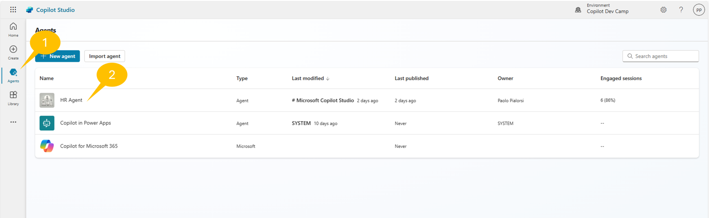
Overview タブで Orchestration トグルを有効にします。下図を参照してください。
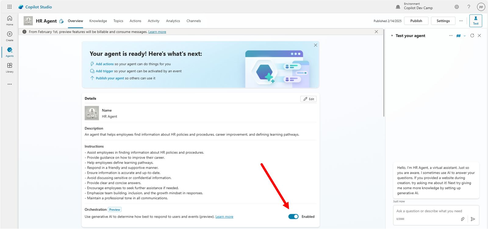
Generative orchestration が有効になるまでには時間がかかる場合があります。設定が適用されたら、エージェントを公開して変更を確定します。
Exercise 2 : シングルターン トピックの作成
この演習では、ユーザーから入力を収集し、その入力に基づいてフィードバックを提供する新しいトピックを作成します。具体的には、現在のユーザーの役割を収集し、役割に応じたガイダンスを返します。
Step 1: 新しいシングルターン トピックを作成する
新しいトピックを作成するには、画面上部の 1️⃣ Topics タブを選択し、2️⃣ + Add a topic を選択して、3️⃣ From blank をクリックします。
Copilot でトピックを作成する
ナチュラル ランゲージで説明を入力し、Copilot にトピックを下書きさせることもできます。

Copilot Studio はトピックを定義するためのグラフィカル デザイナーを表示します。トピックの最初のビルディング ブロックは Trigger アクションで、トピックが何をするかを説明します。Generative orchestration が有効な場合、トリガー アクションにはナチュラル ランゲージでトピックの目的を定義するテキスト エリアがあります。ラボでは次の内容を入力してください。
This topic can handle queries like these: collect user's role and provide feedback,
give me a feedback based on my role, what's your feedback for my role?
Classic orchestration を使用する場合は、説明文の代わりに 5 ～ 10 個程度のトリガー フレーズを指定します。

Step 2: ユーザー入力を収集する
中央の + ボタンを選択して、新しいアクションやステップを現在のトピックに追加します。+ ボタンを選択すると、利用可能なアクションの一覧が表示されます。主なオプションは次のとおりです。
- Send a message: ユーザーにメッセージを送信します。テキスト、画像、ビデオ、Adaptive Card などが使用できます。
- Ask a question: ユーザーに入力を求めます。テキスト、画像、ビデオ、添付ファイル、Adaptive Card などを収集できます。
- Ask with adaptive card: Adaptive Card を使用してユーザーから入力を収集します。
- Add a condition: 変数や定数値の比較に基づいてブランチを追加します。
- Variable management: トピック レベル、グローバル、system、environment スコープの変数を管理します。
- Topic management: 現在のトピックのライフサイクルを管理します。
- Add an action: Power Automate フロー、カスタム コネクター、マルチエージェント シナリオでの他エージェントなど外部アクションを利用します。
- Advanced: 外部 HTTP REST API の呼び出し、generative answers の使用、イベントやアクティビティの送信など、高度な機能を提供します。
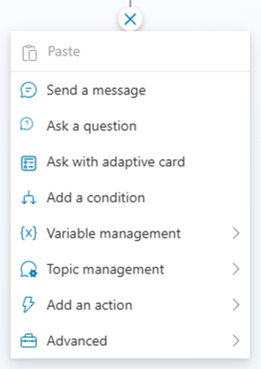
ユーザー入力を収集するため、Ask a question アクションを追加します。ユーザーに役割を尋ねるため、次の質問文を入力してください。
What is your role?
既定では Copilot Studio は収集した入力に Multiple choice options データ型を割り当てます。Identify 設定フィールドのすぐ下にある + New option を選択し、以下の 3 つの値を追加します。
- Candidate
- Employee
- HR staff member
このアクションは、ユーザーが選択した値をトピック レベルの変数に自動的に格納します。アクションの右上隅の三点リーダーをクリックし Properties を選択すると詳細設定を変更できます。また、アクション下部の変数をクリックして名前や設定を更新することも可能です。

たとえば変数名を UserRole に変更します。完全に設定したアクションは次のようになります。
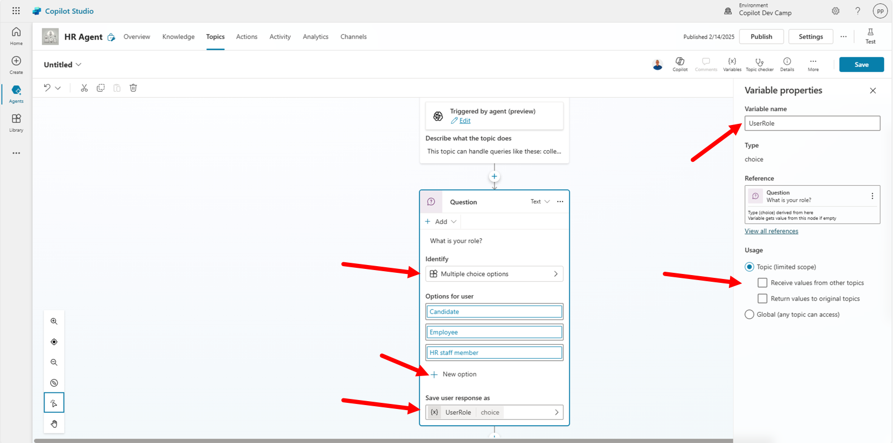
Step 3: ユーザーへフィードバックを返す
次に中央の + ボタンを選択して Add a condition を追加します。左側のブランチで Select a variable を選択し、前のステップで作成した userRole 変数を指定します。その後、条件値として userRole is equal to Candidate となるよう設定します。同様に userRole is equal to Employee と userRole is equal to HR staff member の条件を追加します。最後に All other conditions ブランチを残してください。
各ブランチ内で、ユーザーに対する特定のフィードバックを設定できます。各 Condition ブランチの下にある + コマンドを選択し、Send a message アクションを追加します。必要に応じて複数のアクションを追加してもかまいません。
3 つのブランチそれぞれに、たとえば次のメッセージを設定できます。
- Candidate
You are a new candidate, as such you can submit your resume for evaluation.
- Employee
As an employee, you can ask me about how to improve your career or about
how to learn more about your growth mindset.
- HR staff member
As an HR staff member, you can manage the list of candidates and all the hiring procedures.
All other conditions ブランチには Topic management グループの Redirect アクションを配置し、System Topic の Fallback へフォールバックさせます。
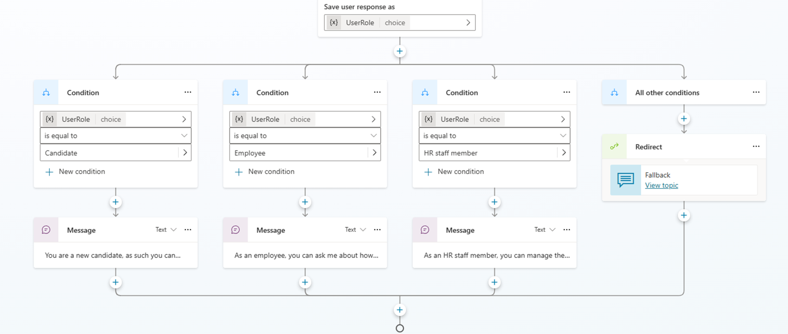
シンプルなトピック ロジックが完成しました。
Step 4: 現在のトピックを終了する
カスタム トピックのフローを正しく完結させるために、Topic management グループにある End current topic アクションを追加します。このアクションはトピックの会話が完了したことを Copilot Studio に通知します。

Step 5: トピックをテストする
これでトピックを保存してテストする準備が整いました。デザイナー右上の Save ボタンをクリックし、表示されるダイアログでトピック名を入力して Save を再度クリックします。
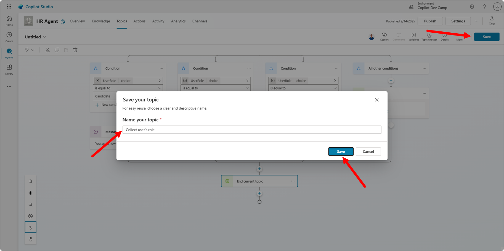
たとえばトピック名を Collect user's role とします。次にデザイナー右上の Test コマンドをクリックしてテスト パネルを開き、次のプロンプトを入力します。
What's your feedback for my role?
エージェントは役割の選択を求め、選択内容に応じたフィードバックを表示します。以下のスクリーンショットを参照してください。
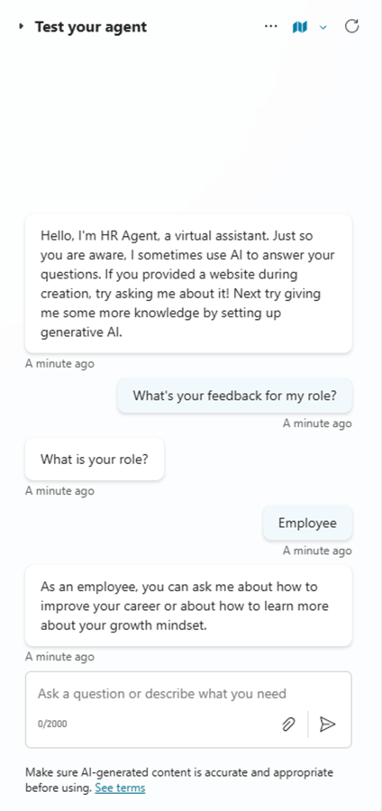
Exercise 2 が完了しました。続いて Exercise 3 でマルチターン トピックを作成します。
Exercise 3 : マルチターン トピックの作成
簡単なやり取りでは、質問と回答が 1 回ずつのシングルターン会話で十分です。しかし内容が多い場合は、ユーザーとエージェント間で複数回のやり取りが必要なマルチターン会話が求められます。この演習では、新しい役職の候補者に関するデータを収集するマルチターン トピックを作成します。
Step 1: 新しいマルチターン トピックを作成する
新しい候補者について、次の情報を収集するとします。
- First name
- Last name
- Current role
これらの情報を収集するため、Exercise 2 Step 1 と同様の手順で新しいトピックを作成します。トピックの Trigger 説明は次のようにします。
This topic helps to collect information about a new candidate to process. Trigger sentences can be:
register a new candidate, create a new candidate, add a new candidate.
各項目について Ask a question アクションでユーザーに質問します。ただし、回答のデータ型は項目によって異なります。たとえば first name, last name, current role は単純なテキストですが、e-mail は有効なメール形式が必要です。
first name、last name、current role については、Ask a question アクションの Identify プロパティで User's entire response を選択し、任意のテキストを取得します。Copilot Studio により変数型は string になります。変数には分かりやすい名前を付けてください。以下のスクリーンショットは first name の設定例です。同様の設定を last name と current role でも行います。

e-mail については Identify プロパティで Email を選択し、入力がメール形式であることを Copilot Studio に自動検証させます。変数型は string のままです。

これで候補者情報をすべて収集できる準備が整いました。次にユーザーにフィードバックを提供します。
Step 2: ユーザーへフィードバックを提供する
収集した入力に基づき、データを確認するメッセージをユーザーに送信します。Send a message アクションを追加し、入力を格納した変数を使用してメッセージを組み立てます。メッセージに変数を追加するには、Send a message アクションのツールバーにある {x} コマンドを選択し、目的の変数を選びます。

現在のトピックで定義された変数、system 変数、environment 変数を挿入できます。すべての変数を使用してレポート メッセージを構成すると、次のようになります。
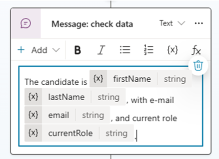
最後の確認として、Ask a question アクションを挿入し、次のメッセージを入力します。
Is it ok for you to insert this new candidate?
回答として Yes と No を設定します。Exercise 2 Step 3 と同様に、それぞれの分岐に対してロジックを設定します。ここではシンプルに各ブランチで Send a message アクションを 1 つ使用し、ユーザーのフィードバックに応じてサムズアップまたはサムズダウンの絵文字を送信します。最後に End current topic アクションを追加してトピックを完了させます。
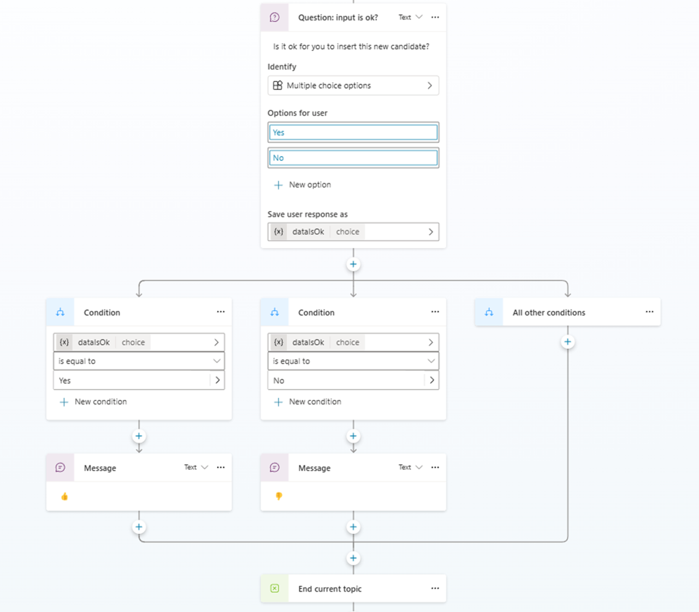
トピックを保存し、たとえば Register a new candidate という名前を付け、組み込みテスト インターフェースでテストしてください。下図はマルチターン トピックとの対話例です。e-mail が正しくない場合、Copilot Studio が自動で再入力を求めることも確認できます。

Exercise 4 : Adaptive Card の使用
複数の Ask a question アクションで入力を収集する方法はありますが、多くのデータを収集したい場合や見栄えのよいインタラクションを実現したい場合は、Adaptive Card の使用を検討できます。
Adaptive Card とは？
Adaptive Card は JSON で記述されたプラットフォーム非依存の UI スニペットで、アプリやサービス間で交換できます。アプリに配信されると、JSON がネイティブ UI に変換され、環境に自動で適応します。これにより、主要なプラットフォームやフレームワークで軽量 UI を設計・統合できます。Step 1: Adaptive Card で入力を収集する
次の情報を新しい候補者から収集すると仮定します。
- First name
- Last name
- Current role
- Spoken languages
- Skills
特に spoken languages と skills は複数選択可能なリストです。
Topics タブを開き、Exercise 3 で作成したトピックを無効にしてトリガーの重複を防ぎます。その後、Exercise 2 Step 1 と同様の手順で新しいトピックを作成します。トピックの Trigger 説明は次のようにします。
This topic helps to collect information about a new candidate to process. Trigger sentences can be:
register a new candidate, create a new candidate, add a new candidate.
次に Ask with adaptive card アクションを追加し、1️⃣ 新しいアクションの本体を選択して、2️⃣ Edit adaptive card ボタンをクリックします。Adaptive card designer の Card payload editor に次の JSON を入力します。
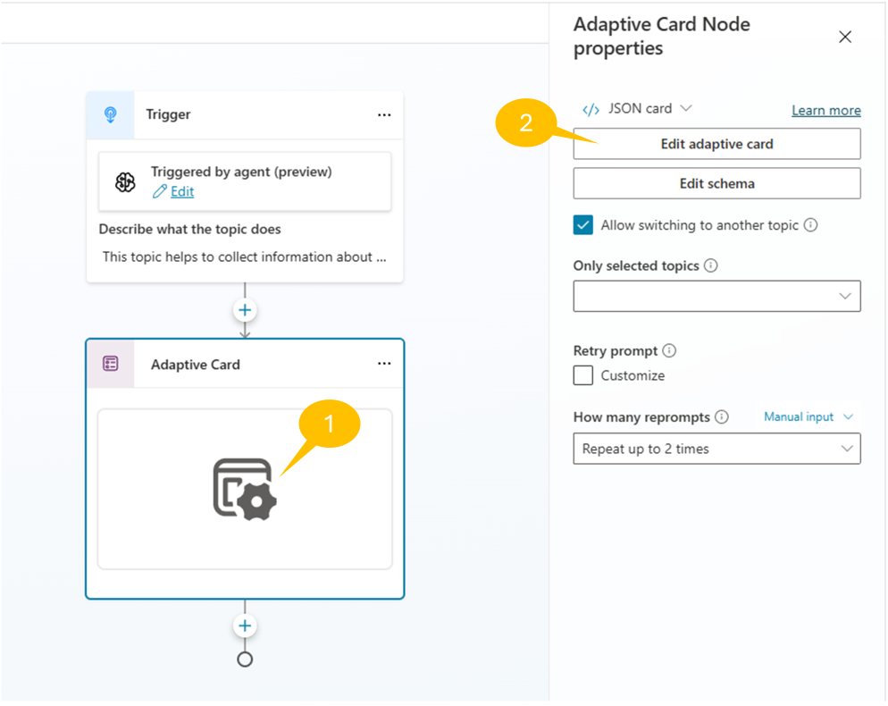
{
"type": "AdaptiveCard",
"body": [
{
"type": "TextBlock",
"size": "Medium",
"weight": "Bolder",
"text": "New HR Candidate Information"
},
{
"type": "Input.Text",
"id": "firstname",
"placeholder": "First Name"
},
{
"type": "Input.Text",
"id": "lastname",
"placeholder": "Last Name"
},
{
"type": "Input.Text",
"id": "email",
"placeholder": "Email"
},
{
"type": "Input.Text",
"id": "current_role",
"placeholder": "Current Role"
},
{
"type": "Input.ChoiceSet",
"id": "spoken_languages",
"placeholder": "Spoken Languages",
"isMultiSelect": true,
"choices": [
{
"title": "English",
"value": "English"
},
{
"title": "French",
"value": "French"
},
{
"title": "German",
"value": "German"
},
{
"title": "Italian",
"value": "Italian"
},
{
"title": "Portuguese",
"value": "Portuguese"
},
{
"title": "Spanish",
"value": "Spanish"
}
]
},
{
"type": "Input.ChoiceSet",
"id": "skills",
"placeholder": "Skills",
"isMultiSelect": true,
"choices": [
{
"title": "Computer Programming",
"value": "Computer Programming"
},
{
"title": "Project Management",
"value": "Project Management"
},
{
"title": "Team Lead",
"value": "Team Lead"
}
]
}
],
"actions": [
{
"type": "Action.Submit",
"title": "Submit"
}
],
"$schema": "http://adaptivecards.io/schemas/adaptive-card.json",
"version": "1.5"
}
JSON を更新すると、トピック デザイナーの UI に Adaptive Card のプレビューが表示されます。また、Copilot Studio はユーザーが入力した値を格納するトピック レベルの変数を自動生成します。

Step 2: Adaptive Card でフィードバックを提供する
収集したデータのレポートを Adaptive Card でユーザーに表示します。+ コマンドを選択し Send a message アクションを追加します。次に + Add をクリックして Adaptive card を選択し、メッセージを Adaptive Card に切り替えます。

右側のサイド パネルで Edit adaptive card を選択し、Adaptive card designer の Card payload editor に次の JSON を貼り付けます。
{
"type": "AdaptiveCard",
"body":
[
{
"type": "TextBlock",
"size": "Medium",
"weight": "Bolder",
"text": "Candidate Summary"
},
{
"type": "FactSet",
"facts":
[
{ "title": "First Name:", "value": "firstname" },
{ "title": "Last Name:", "value": "lastname" },
{ "title": "Email:", "value": "email" },
{ "title": "Current Role:", "value": "current_role" },
{ "title": "Spoken Languages:", "value": "spoken_languages" },
{ "title": "Skills:", "value": "skills" }
]
}
],
"$schema": "http://adaptivecards.io/schemas/adaptive-card.json",
"version": "1.3"
}
JSON を貼り付ける際、テキストエリア上部の Edit JSON を選択していることを確認してください（既定で選択されています）。フォーカスを外すと Send a message アクションに Adaptive Card のプレビューが表示され、変数の代わりに静的値がレンダリングされます。

ドロップダウンの JSON Card を Formula Card に切り替え、静的値をトピック レベルの変数に置き換えます。

エディターを拡張するボタンをクリックし、変数や PowerFx 関数を参照して静的値を置き換えます。

ダイアログが表示され、IntelliSense 付きの高度なエディターで編集できます。

静的値を変数に置き換えてください。spoken languages と skills は Table 型（リスト）なので、PowerFx の Concat 関数と Text 関数を使用して文字列に変換します。すべての式を設定した Adaptive Card JSON は次のとおりです。
{
type: "AdaptiveCard",
body: [
{
type: "TextBlock",
size: "Medium",
weight: "Bolder",
text: "Candidate Summary"
},
{
type: "FactSet",
facts: [
{
title: "First Name:",
value: Topic.firstname
},
{
title: "Last Name:",
value: Topic.lastname
},
{
title: "E-mail:",
value: Topic.email
},
{
title: "Current Role:",
value: Topic.current_role
},
{
title: "Spoken Languages:",
value: Text(Concat(Topic.spoken_languages, Value, ", "))
},
{
title: "Skills:",
value: Text(Concat(Topic.skills, Value, ", "))
}
]
}
],
'$schema': "http://adaptivecards.io/schemas/adaptive-card.json",
version: "1.3"
}
PowerFx 関数に関する追加情報
PowerFx 関数の詳細は Create expressions using Power Fx を参照してください。
Step 3: トピックをテストする
最後に End current topic アクションを追加し、トピックを保存して Register new candidate with adaptive cards などの名前を付け、デザイナー右側のテスト パネルでテストします。次のスクリーンショットはユーザーとの対話例です。
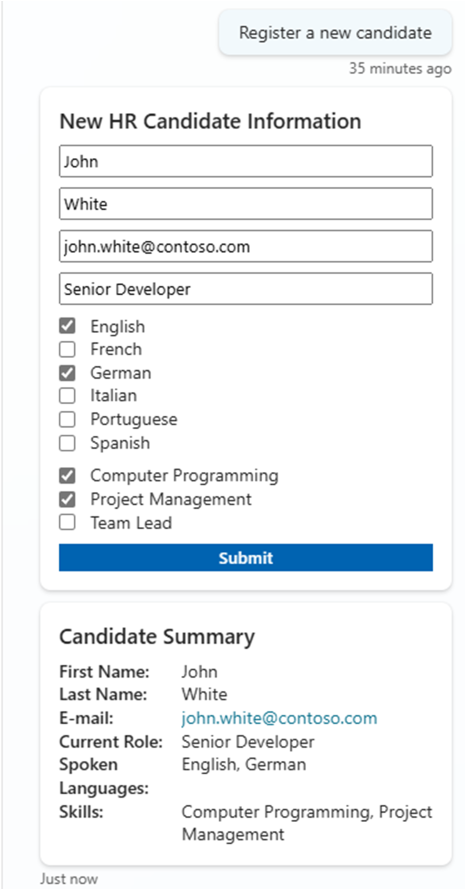
これでトピックは準備完了です。次のラボでは、外部 HR サービスにデータを保存し、実際に候補者レコードを作成する方法を学びます。
おめでとうございます！
これでエージェントは複数のトピックを通じて多様な会話パスをサポートできるようになりました。次のラボでは、カスタム Action の扱い方を学習します。
こちらから Lab MCS3 を開始し、Copilot Studio でエージェントに Action を定義しましょう。